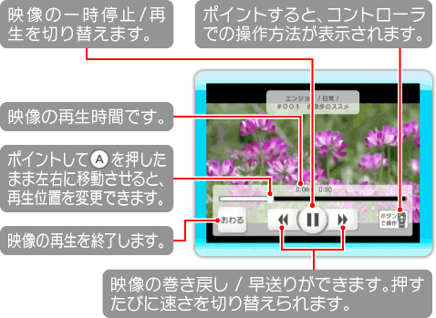
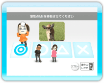
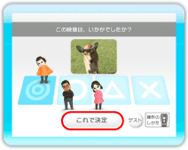

16 |
映像の見かた |
 |
|
映像の視聴中に画面をポイントすると、画面下部に映像の再生時間やボタンなどが表示されます。

● 作品に投票する 映像などの作品を見たあと、感想を投票します。投票の結果は任天堂に送信され、多くの人が満足した作品は、

1.感想を選ぶ ※次の手順に進むには、最低ひとりが感想を選ぶ必要があります。 ※画面右下の「ゲスト」を選ぶと、Miiを登録していない方（親戚やお客さんなど）も投票することができます。ゲストとして投票できるのは、最大10人です。

2.「これで決定」を選ぶ ● 再生終了後メニューについて 作品を見たあと、今見た作品を家族やWiiフレンドにおすすめしたり、DSi本体に転送したりすることができます。 ※画面に表示されるボタンの種類や数は、状況により変わります。DSi本体に転送できる作品には、
「おすすめする」「ニンテンドーDSiに送る」「お気に入りにいれる」の使いかたについては、P.17以降の項目をご覧ください。
|
 |
 |